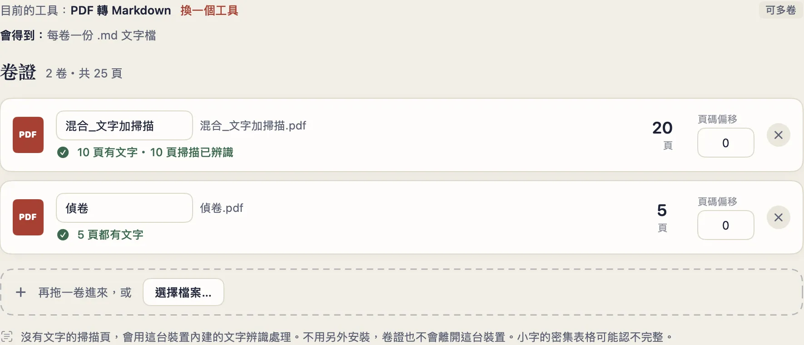
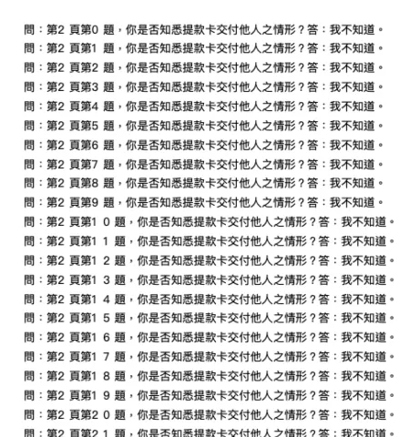
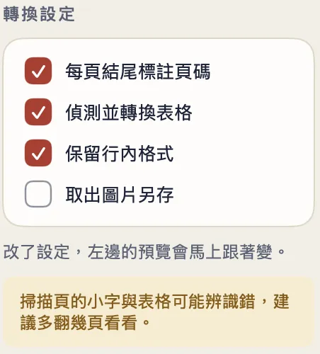
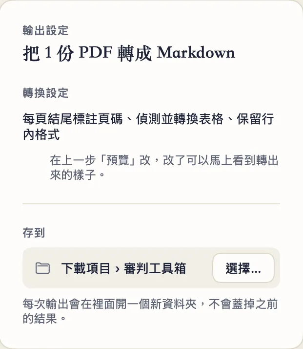
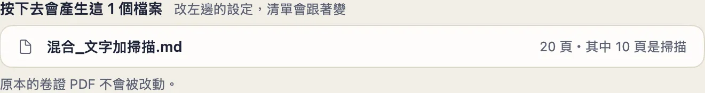

把卷證轉成文字檔：PDF 轉 Markdown 教學
Markdown 是純文字檔，任何文字編輯器都打得開，可以搜尋，也可以貼到其他工具或交給 AI 工具整理。「PDF 轉 Markdown」把一卷卷證整份轉成一個 .md 檔，掃描頁會先辨識文字。轉出來的樣子可以在輸出前和原頁面並排比對。
這個工具做什麼
「PDF 轉 Markdown」在首頁的「讀卷」那一組。放進來的每一卷 PDF，各轉成一個 .md 文字檔：
- 有文字層的頁直接取出文字；沒有文字的掃描頁，先用裝置內建的文字辨識讀出文字。
- 依字的大小判斷標題，表格轉成 Markdown 表格。
- 每一頁前面可以加一行頁碼註記，之後看文字檔也知道是原卷第幾頁。
整個過程在這台裝置上處理，卷證不會上傳。原本的 PDF 不會被改動，輸出是另存新檔。
第一步：放入卷證
從首頁或側邊欄點「PDF 轉 Markdown」，把 PDF 拖進視窗，或按「選擇檔案…」。這個工具可以一次放好幾卷，每卷各轉成一份 .md。

- 每一卷放進來後，App 先檢查哪些頁有文字、哪些是掃描頁，掃描頁會在這時辨識文字，完成後顯示「N 頁有文字・N 頁掃描已辨識」。頁數多時要等一下。
- 不要的那一卷，按右邊的 × 拿掉。有開啟密碼的 PDF，放進來時會問密碼。
- 列表上的「卷宗簡稱」與「頁碼偏移」是讀卷幾個工具共用的欄位。PDF 轉 Markdown 的檔名用原本的檔名，頁碼註記用 PDF 的頁碼，不受這兩欄影響。
- 都好了，按右上角的「下一步：預覽」。
放入的幾種方法（拖進來、選擇檔案、從 Finder 打開）在第一次使用那篇有詳細說明。
第二步：對照原頁面預覽
預覽畫面分成三欄：左邊是「原頁面」，中間是「轉出來的 Markdown」，右邊是「轉換設定」。左邊和中間永遠是同一頁。
原頁面

轉出來的 Markdown

上方那一列寫著檔名、總頁數，以及其中幾頁是掃描。右邊的箭頭翻上一頁、下一頁。放了好幾卷時，可以用「換一卷」切換要看哪一卷。
要注意的地方：
- 掃描頁的辨識結果不一定對，尤其是小字和表格。右欄有一則提醒「掃描頁的小字與表格可能辨識錯，建議多翻幾頁看看。」
- 某一頁轉不出任何文字時，中間會寫「這一頁沒有轉出任何文字（可能是空白頁，或沒有辨識出文字）。」
- 預覽只是看樣子，這一步不會產生檔案。看過幾頁沒問題，再按右上角的「下一步：輸出」。
四個轉換設定
右欄的四個選項，改了以後中間的預覽會馬上跟著變，可以邊改邊看。

- 每頁結尾標註頁碼：每一頁的文字前面加一行
<!-- page N -->，N 是原 PDF 的第幾頁。這一行在 Markdown 的閱讀畫面裡看不到，用文字編輯器打開才看得到。要引用頁碼、或交給 AI 工具時要它標出處，建議勾著。 - 偵測並轉換表格：頁面上有格線的表格，轉成 Markdown 表格。
- 保留行內格式：保留粗體、斜體。
- 取出圖片另存：頁面裡的圖片另外存成圖檔，放在 .md 旁邊的 images 資料夾，文字裡留一行圖片連結。預覽不會顯示取出的圖片。
第三步：輸出
輸出步驟的左邊是輸出設定：上一步選的轉換設定摘要，以及「存到」哪個資料夾。轉換設定要回上一步「預覽」改。
輸出設定

會產生的檔案

- 預設存到「下載項目 › 審判工具箱」，可以按「選擇…」換位置。每次輸出會在裡面開一個新資料夾，不會蓋掉之前的結果。
- 右邊「按下去會產生這 N 個檔案」列出每個檔名、頁數與掃描頁數。確認後按右上角的「開始輸出 N 個檔案」。
完成畫面列出產生的檔案，每一個都可以按「打開」；「在 Finder 顯示」打開那次輸出的資料夾。要再轉別的卷，按「處理另一份」。
轉出來的檔案長什麼樣子
- 檔名是原檔名加 .md，例如「偵卷.pdf」轉成「偵卷.md」。
- 檔案開頭是來源檔名、轉換時間與頁數，接著是每一頁的內容。
- 勾了頁碼註記時，每一頁前面有
<!-- page N -->。 - 勾了取出圖片時，另有放圖片的 images 資料夾。
.md 檔可以用 Mac 的「文字編輯」、Windows 的記事本或任何 Markdown 編輯器打開。
在 iPhone・iPad 上
步驟相同。iPhone 的預覽一次只顯示一面，用上方的「原頁面」「Markdown」切換；轉換設定在「轉換設定」按鈕裡，改了一樣會馬上反映在預覽。按鈕在畫面下方，輸出的檔案在「檔案 › 我的 iPhone › 審判工具箱」。細節在iPhone・iPad 版的介紹。
做不到的事／要注意
- 文字辨識會出錯。掃描品質差的頁面、很小的字、密集的表格和手寫都容易讀錯；直書也認不完整。轉出來的文字要引用時，請對照原卷。
- 標題是依字的大小判斷，表格是依頁面上的格線判斷，判斷錯時標題層級或表格會不對。
- 只轉頁面上的文字。註解（便利貼）、表單欄位的內容不會轉出來；圖片裡的文字不會辨識，只能用「取出圖片另存」存成圖檔。
- 轉出來的文字含卷證裡的個資。要交給別人或 AI 工具之前，可以先用去識別化把姓名、身分證字號等換成代號。
想照章節標題（壹、貳、一、二）切成好幾個 Markdown，用章節切割；要依陳述人把筆錄分開再轉，用供述切割的「同時輸出 Markdown」。整理好的文字要請 AI 工具做時間軸、比對供述，看交給 AI。
常見問題
掃描的卷證也能轉嗎？
可以。沒有文字的掃描頁會先用裝置內建的文字辨識讀出文字，不會上傳。辨識會有錯字，小字、表格和手寫特別容易錯，輸出前請在預覽多翻幾頁。
轉出來的檔案怎麼知道是原卷第幾頁？
勾「每頁結尾標註頁碼」（預設有勾），每一頁的文字前面會有一行 <!-- page N -->，N 是原 PDF 的頁碼。
可以一次轉好幾卷嗎？
可以。一次放好幾卷，每卷各轉成一份 .md，放在同一次輸出的資料夾裡。